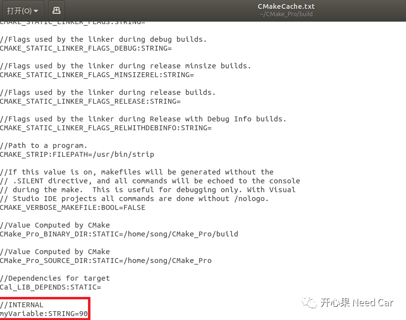

在了解了CMake的编译过程后，我们需要深入的了解一下CMake的细节，本文从CMake语言的变量(Variables)开始深挖。
变量可以分为自定义变量、系统变量和环境变量等，本文主要介绍常用变量的定义和引用方式。

自定义变量
自定义变量可以使用 "set" 或者 "unset"来动态定义变量的作用范围，也可以用来改变CMake过程中变量的值。
set语法如下所示：
set(<variable> <value> ... [PARENT_SCOPE])或者set(<variable> <value> ...CACHE <type> <docstring> [FORCE])
示例：定义变量includePath，之后取消定义。
修改顶层的CMakeLists.txt文件，如下所示：
# cmake最低版本要求cmake_minimum_required(VERSION 3.10.2)# 设置项目名称和版本号project(CMake_Pro)# 设置使用C++标准版本set(CMAKE_CXX_STANDARD 11)set(CMAKE_CXX_STANDARD_REQUIRED True)set(includePath "Define variable : includePath")MESSAGE( STATUS ${includePath} )unset(includePath)MESSAGE( STATUS ${includePath} )# 添加src子目录add_subdirectory(src)# 编译源码生成目标add_executable(CMake_Pro main.cpp)# 包含头文件路径target_include_directories(CMake_Pro PUBLIC "./include/")# 添加链接库target_link_libraries(CMake_Pro Cal)
CMake及Make过程运行结果：
song@song-VirtualBox:~/CMake_Pro$ bash CMake_Build.sh***************:Execute cmake ***************-- Define variable : includePath---- Configuring done-- Generating done-- Build files have been written to: /home/song/CMake_Pro/build***************:Execute make ***************[ 50%] Built target Cal[100%] Built target CMake_Prosong@song-VirtualBox:~/CMake_Pro/build$
提示：
使用MESSAGE将输出CMake过程信息 对变量引用时使用${Variable Name}方式 本例将变量includePath定义成一个字符串，也可以定义成一个数值，如下所示：
set(includePath 123)01
PARENT_SCOPE使用
上级CMakeLists.txt：
cmake_minimum_required(VERSION 3.10.2)project(CMake_Pro)set(CMAKE_CXX_STANDARD 11)set(CMAKE_CXX_STANDARD_REQUIRED True)set(myVariable 80)MESSAGE(STATUS "Parent myVariable: ${myVariable}")add_subdirectory(src)add_executable(CMake_Pro main.cpp)target_include_directories(CMake_Pro PUBLIC "./include/")target_link_libraries(CMake_Pro Cal)
下级CMakeLists.txt：
# 查找当前目录下的所有源文件,并将名称保存到 CUR_DIR_SRCS 变量aux_source_directory(. CUR_DIR_SRCS)# 生成链接库add_library (Cal ${CUR_DIR_SRCS})set(myVariable PARENT_SCOPE)MESSAGE(STATUS "Using parent myVariable: ${myVariable}")set(myVariable 60)MESSAGE(STATUS "Using child myVariable: ${myVariable}")target_include_directories(Cal PUBLIC "../include/")
CMake运行结果：
song@song-VirtualBox:~/CMake_Pro$ bash CMake_Build.sh***************:Execute cmake ***************-- Parent myVariable: 80-- Using parent myVariable: 80-- Using child myVariable: 60-- Configuring done-- Generating done-- Build files have been written to: /home/song/CMake_Pro/build***************:Execute make ***************[ 50%] Built target Cal[100%] Built target CMake_Prosong@song-VirtualBox:~/CMake_Pro/build$
如上所示，在下级中使用了上级的变量myVariable，在下级重新定义以后，变量myVariable改变。
02
CACHE使用
添加CACHE限定以后，该变量会存储在CMakeCache.txt文件中，CMakeCache.txt文件在cmake的过程中生成，可以在build生成的文件里查找。
示例：
# cmake最低版本要求cmake_minimum_required(VERSION 3.10.2)# 设置项目名称和版本号project(CMake_Pro)# 设置使用C++标准版本set(CMAKE_CXX_STANDARD 11)set(CMAKE_CXX_STANDARD_REQUIRED True)set(myVariable "80" CACHE STRING INTERNAL FORCE)MESSAGE(STATUS "myVariable: ${myVariable}")set(myVariable "100")MESSAGE(STATUS "myVariable: ${myVariable}")MESSAGE(STATUS "myVariable: $CACHE{myVariable}")set(myVariable "90" CACHE STRING INTERNAL FORCE)MESSAGE(STATUS "myVariable: ${myVariable}")# 添加src子目录add_subdirectory(src)# 编译源码生成目标add_executable(CMake_Pro main.cpp)# 包含头文件路径target_include_directories(CMake_Pro PUBLIC "./include/")# 添加链接库target_link_libraries(CMake_Pro Cal)
cmake运行过程：
song@song-VirtualBox:~/CMake_Pro$ bash CMake_Build.sh***************:Execute cmake ***************-- myVariable: 80-- myVariable: 100-- myVariable: 80-- myVariable: 90-- Configuring done-- Generating done-- Build files have been written to: /home/song/CMake_Pro/build
解析：
第一次设置变量myVariable为CACHE变量，缓存在CMakeCache.txt文件中，值为字符型80；
第二次设置变量myVariable为normal变量，不缓存CMakeCache.txt文件，值为字符型100；
第三次读取缓存在CMakeCache.txt文件中的myVariable变量，值为80；
第四次修改缓存在CMakeCache.txt文件中的myVariable变量值，修改为字符型90。
如下是缓存在CMakeCache.txt文件中的myVariable变量值。


环境变量
1
使用默认环境变量
示例：引用环境变量PROJECT_NAME和CMAKE_CURRENT_SOURCE_DIR，即获取当前CMake工程的名字（自定的工程名字）和当前CMakeLists.txt文件所在的路径。
cmake_minimum_required(VERSION 3.10.2)project(CMake_Pro)set(CMAKE_CXX_STANDARD 11)set(CMAKE_CXX_STANDARD_REQUIRED True)MESSAGE( STATUS ${PROJECT_NAME} )MESSAGE( STATUS ${CMAKE_CURRENT_SOURCE_DIR} )add_subdirectory(src)add_executable(CMake_Pro main.cpp)target_include_directories(CMake_Pro PUBLIC "./include/")target_link_libraries(CMake_Pro Cal)
CMake及Make过程运行结果：
song@song-VirtualBox:~/CMake_Pro$ bash CMake_Build.sh***************:Execute cmake ***************-- CMake_Pro-- /home/song/CMake_Pro-- Configuring done-- Generating done-- Build files have been written to: /home/song/CMake_Pro/build***************:Execute make ***************[ 50%] Built target Cal[100%] Built target CMake_Prosong@song-VirtualBox:~/CMake_Pro/build$
如上可以看出，第3行输出了CMake的工程名称，第4行输出了顶层CMakeLists.txt文件所在的路径。
2
自定义环境变量
set(ENV{<variable>} [<value>])示例：
cmake_minimum_required(VERSION 3.10.2)project(CMake_Pro)set(CMAKE_CXX_STANDARD 11)set(CMAKE_CXX_STANDARD_REQUIRED True)set(ENV{myEnvVar} "80")MESSAGE(STATUS "myEnvVar: $ENV{myEnvVar}")add_subdirectory(src)add_executable(CMake_Pro main.cpp)target_include_directories(CMake_Pro PUBLIC "./include/")target_link_libraries(CMake_Pro Cal)
cmake运行过程如下所示：
song@song-VirtualBox:~/CMake_Pro$ bash CMake_Build.sh***************:Execute cmake ***************-- myEnvVar: 80-- Configuring done-- Generating done-- Build files have been written to: /home/song/CMake_Pro/build

系统变量
示例：引用系统变量CMAKE_SYSTEM、CMAKE_SYSTEM_NAME、CMAKE_SYSTEM_VERSION、CMAKE_SYSTEM_PROCESSOR。获取当前工程使用的系统，系统名，系统版本及使用的处理器。
cmake_minimum_required(VERSION 3.10.2)project(CMake_Pro)set(CMAKE_CXX_STANDARD 11)set(CMAKE_CXX_STANDARD_REQUIRED True)MESSAGE( STATUS ${CMAKE_SYSTEM} )MESSAGE( STATUS ${CMAKE_SYSTEM_NAME} )MESSAGE( STATUS ${CMAKE_SYSTEM_VERSION} )MESSAGE( STATUS ${CMAKE_SYSTEM_PROCESSOR} )add_subdirectory(src)add_executable(CMake_Pro main.cpp)target_include_directories(CMake_Pro PUBLIC "./include/")target_link_libraries(CMake_Pro Cal)
CMake及Make过程运行结果：
song@song-VirtualBox:~/CMake_Pro$ bash CMake_Build.sh***************:Execute cmake ***************-- Linux-5.4.0-91-generic-- Linux-- 5.4.0-91-generic-- x86_64-- Configuring done-- Generating done-- Build files have been written to: /home/song/CMake_Pro/build***************:Execute make ***************[ 50%] Built target Cal[100%] Built target CMake_Pro
https://cmake.org/cmake/help/v3.22/manual/cmake-variables.7.html
往期精彩推荐：

Vector代码这样过滤CanID Range，你Get到没？